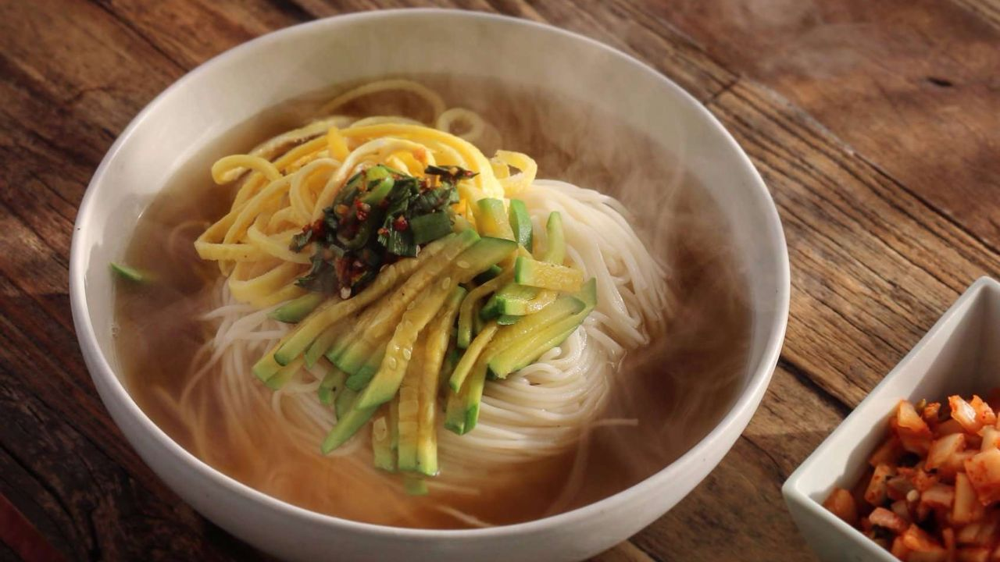

Janchi guksu

Description
Janchi guksu is a simple warm noodle dish made with thin wheat noodles (somyeon) that are usually in a clear anchovy or beef broth! It’s an easy comfort food that’s very popular in Korea.
Ingredients
Stock ingredients
- about 6 cups (1.1L) water
- 1/2 (160g) summer squash
- 1/2 (125g) onion
- 2 shiitake
- 1/9 (30g) carrot
- about 1/3 cup (70g) soup soy sauce
- 1/6 tbsp (2g) fine salt
- 1 egg
Seasoned soy sauce ingredients
- about 1/3 cup (80g) thick soy sauce
- 1/2 (50g) stalk green onion
- 2 (20g) Cheongyang peppers
- 1/2 tbsp (10g) minced garlic
- 1 tbsp (8g) coarse red chili pepper powder
- 1 tbsp (7g) sesame oil
- 1 tbsp (6g) crushed sesame seeds
- 1/3 tbsp (4g) brown sugar
For 1 serving
- about 5 1/2 cup (1L) water (for boiling the noodles)
- 100g dried somyeon
- 1/2 of the stock
- seasoned soy sauce to your liking
- some black pepper powder
Steps
Stock
- Julienne the onion and summer squash in 0.5cm thickness.
- Julienne the carrot and shiitake in 0.3cm thickness.
- Boil water in a pot over high heat.
- When the water comes to a boil, add the prepared vegetables and continue boiling.
- When the stock comes to a full boil, season with soup soy sauce and fine salt.
- Crack in the egg and stir slightly. Then, turn off the heat.
Seasoned soy sauce
- Finely chop the green onion in 0.3cm thickness.
- Slice the Cheongyang pepper in half lengthwise and chop in 0.3cm thickness.
- In a deep bowl, combine the green onion, Cheongyang pepper, thick soy sauce, coarse red chili pepper powder, crushed sesame seeds, brown sugar, and minced garlic.
- Add sesame oil and combine to make the seasoned soy sauce.
For 1 serving
- Boil water in a pot over high heat.
- When the water comes to a boil, add the somyeon and boil for about 3 minutes and 30 seconds, stirring occasionally to avoid it from sticking.
- When the somyeon is cooked, scoop it out. Under cold water, rinse thoroughly as if doing laundry to remove the starch.
- Remove the moisture from the somyeon before plating and pour the stock over the somyeon.
- Season with seasoned soy sauce and black pepper powder, and serve.